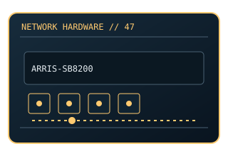

[ MODEL-SPECIFIC NETWORK HARDWARE ]
ARRIS SURFboard SB8200 DOCSIS 3.1 Cable Modem
DOCSIS 3.1 modem with two Gigabit Ethernet ports. This entry uses the labeled manufacturer model identifier and cites primary product/support documentation.

MODEL IDENTIFICATION: Match the complete model/part number and hardware revision on the item label to manufacturer documentation. Do not apply this entry to near-name variants.
Exact specifications and compatibility
| Cataloged model | ARRIS SURFboard SB8200 DOCSIS 3.1 Cable Modem |
|---|---|
| Dedicated subcategory | Modems and line-termination devices |
| Bus / host interface | Coaxial DOCSIS WAN; dual RJ-45 Ethernet. |
| Ports / physical interfaces | 2 × Gigabit Ethernet ports; link aggregation behavior depends on ISP/service and router support. |
| PHY, radio or protocol | DOCSIS 3.1 with DOCSIS 3.0 backward compatibility subject to ISP activation. |
| PoE | No PoE input or PoE output is documented for this product. |
| Link-rate vs throughput | Two Gigabit ports do not make a single 2Gb/s client link; ISP provisioning and supported aggregation determine service. Link rates are nominal negotiated/PHY specifications, not measured application throughput; no measured specimen result is claimed. |
| Firmware / driver support | Modem firmware is ISP-managed; no conventional PC driver. Check provider-approved list and activation policy. |
| Compatibility checks | Use only approved coax/power setup, and confirm the modem is supported by the specific provider before activation. |
Model-specific notes
This is a cable modem, not a Wi-Fi router.
Primary manufacturer sources
- SURFboard SB8200 official product supportManufacturer product specification or documentation for the exact model/family.
- Manufacturer support and compatibility resourcesFirmware, driver, compatibility, revision or support details; applicability may depend on the exact hardware revision and region.
Vendor maximum rates are not test results. Confirm regional variants, hardware revision and current support status with the manufacturer.